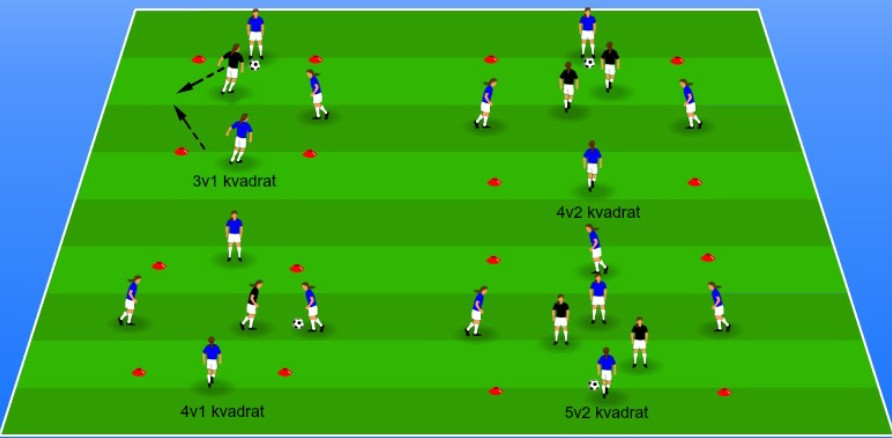

Att förbättra spelarnas passningsteknik, försvar, kommunikation och speluppfattning
4-7 spelare
Yta anpassad
1 boll
Sätt upp en kvadrat och fördela spelarna längs kanterna, se illustration.
Välj ut två eller en som börjar i mitten och ska försöka att bryta passningarna.
De spelare längs med kanterna ska försöka att passa runt till varandra utan att de två i mitten lyckas att bryta passningarna.
Bryts en passning så får den som slog passningen ta plats i mitten medan en av de i mitten får gå ut och passa.
Om ni tränare vill justera tempot i övningen och kravet på spelarna så dra ner på tillslagen – ett, två eller att man måste ta två tillslag innan man får spela vidare bollen. (Ett tillslag är när man rör bollen. En pass, mottagning eller förflyttning av bollen är till exempel ett tillslag.)
Viktigt även att förklara hur man ska återvinna bollen lättast speciellt när de är 2 stycken som jagar. Press, understöd och den kommunikation som krävs för att kunna täcka av rätt. ➜